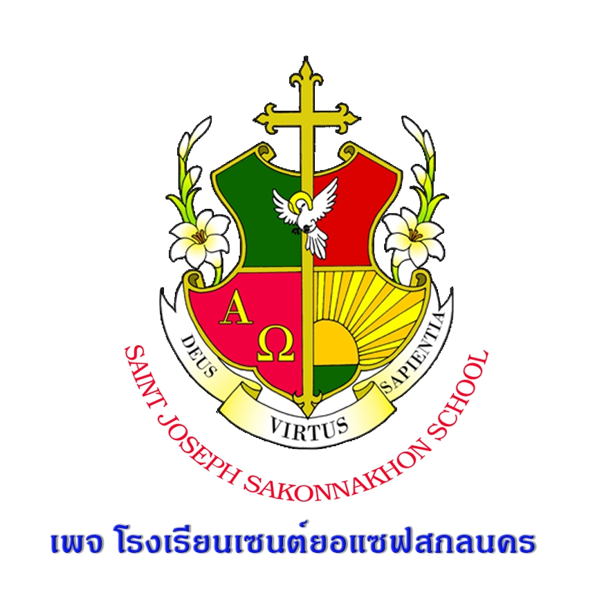

นางสาวณัฏฐณิชา โยธะคง เลขที่7 ม.5/6
ปัจจุบันเป็นนักเรียนอยู่ที่ โรงเรียนธาตุนารายฯ์วิทยา
😀😀😀ความถนัดคือ สามารถนอนดูซีรียส์ ได้ทั้งวันแบบไม่พักผ่อน😀😀😀
ความสามารถพิเศษ
- ทำอาหารอร่อย
- เล่นบาส
งานอดิเรก
- เลี้ยงวัว
- ฟังเพลง
- ดูซีรีส์
- อ่านหนังสือ
เพลงที่ชอบ
1.ลืมไปแล้วว่าลืมยังไง| โรงเรียนชุมชนบ้านสร้างค้อ | ปี2552-2555 | |
|  | โรงเรียนเซนต์ยอแซฟสกลนคร | ปี2556-2561 |
 |
โรงเรียนธาตุนารายณ์วิทยา | ปี2561-2565 |